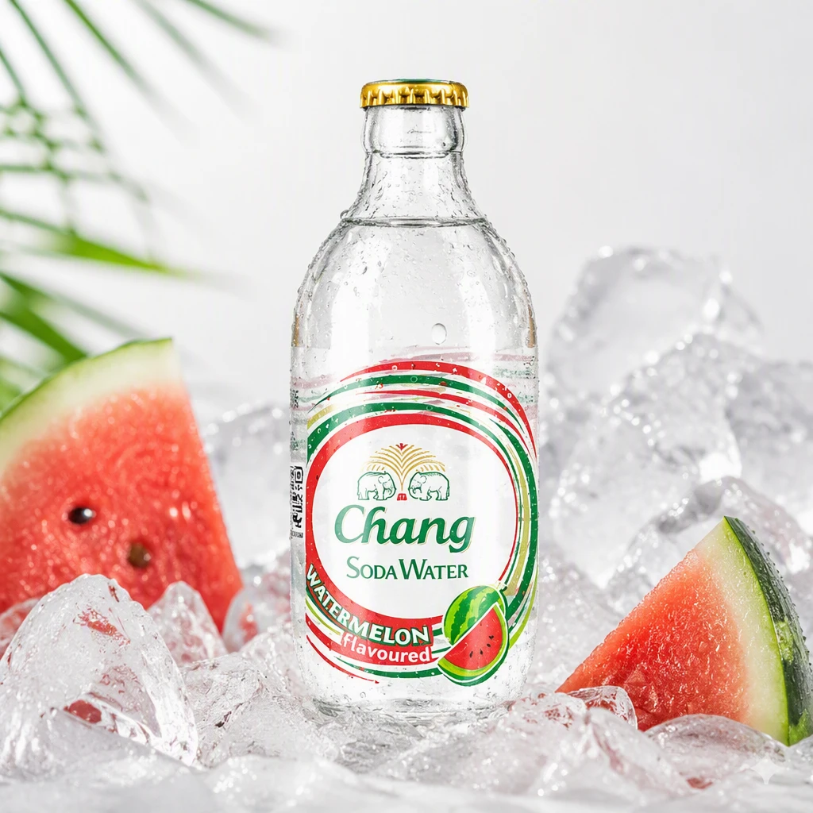

LinkPix 装了快半年：AI 做商品图这件事，从新鲜到离不开
一个电商从业者用 LinkPix 做了近百套主图、十几个广告视频后的真实感受——哪些越用越顺手，哪些还在等改善，以及它到底能不能替代外包。
去年双 11 前装的 LinkPix，至今算下来快半年了。当初是朋友圈看到同行晒 AI 生成的商品主图，抱着"试试看能不能省外包钱"的心态去装的——它的LinkPix官网上有完整功能介绍，从官方下载拿安装包花了十分钟，注册完就能用。那时候对它的预期很模糊——不就是个 AI 画图工具吗？跟网上那些文生图的东西差不多吧。

最开始用它做什么
第一个上手的功能是主图生成器。那会儿店铺正好上新品，白底实拍图拍了一堆，想做几张带场景感的主图试试点击率。上传商品图，在任务描述里写"原木桌面、下午窗边自然光、突出便携性"，点生成。
第一次拿到结果的时候说实话有点惊喜——不是那种一看就是 AI 画的假图，商品主体跟原图对得上，包装颜色没跑偏，放在桌面的光影也自然。然后就陆续试了特写方向、组合展示方向，每条提示词跑个三五张，挑最好的存。
但刚开始用得很别扭。提示词怎么写才出好结果完全没谱，"好看的主图"这种废话写进去出来的东西乱七八糟。后来去LinkPix文档翻了一下提示词指南才弄明白——得写得非常具体，什么材质、什么光线、什么角度，越具体越稳。还有生成结果不是像素锁定的，包装上的小字经常歪歪扭扭，发布前必须人工过一遍，这点跟我最初想的"一键出图"差距不小。
后来发现它根本不是单张工具
用了大概一个月，偶然点到批量生产线。这一下才反应过来，LinkPix 的真正定位可能不是"AI 帮你画图"，而是"帮你把电商图片这条流水线自动化"。
批量裁剪是第一个让我觉得"值了"的功能。之前一批商品主图要统一成 800×800 的正方形，用 PS 逐张拉裁剪框，快的也得十几分钟。现在把十张图一股脑拖进去，选好目标尺寸和裁剪方式（我一般用居中裁剪，商品主体大部分都在画面中间），点确认，十张图一次出。遇到主体不在中心的批次，用自定义选区手动框一次，所有图按同一区域裁，出来的构图整整齐齐。
然后是批量生图。一件新品，我上传最清晰的那张参考图，写七八条不同方向的提示词——场景的、特写的、卖点信息图的、组合展示的——每条跑两张，一次就是十几张候选。这在以前是外包团队干的活，我得跟美工反复沟通"这个方向再来几张、那个光线调一下"，中间来回好几天。现在十分钟拿结果，不满意的方向改改提示词重跑就行。
但批量也有坑。最多 10 张的上限有时候不够——大促期商品多，分好几批跑，批次之间的风格一致性得自己盯着。还有提示词的区分度很关键，要是两条写得差不多，出来的图也差不多，纯浪费生成额度。
视频功能：期待很高，实际半用半放
过了一阵才试广告大片生成器。上传商品图，选首尾帧、运镜方式、时长和比例，生成一条十几秒的商品广告视频。
第一次跑的是一个香氛灯的广告，选了缓慢推进运镜、10 秒时长、9:16 竖版。出来的结果——怎么说呢，运镜流畅，从环境中景推进到材质特写，最后收在品牌定格，整体结构对的。但逐帧看的话，灯罩的纹理在中间几帧有微妙变化，底座的 Logo 位置也漂了一点点。
这个功能我后来用了几次，但没有成为高频工具。原因不是效果不好，而是发布前逐镜检查的成本太高——一条 10 秒的视频，每秒 30 帧，逐帧核对结构和颜色，比生成本身还费时间。而且现在短视频平台的带货视频更多还是口播加字幕的形式，纯画面广告用得没那么多。不过如果以后做品牌主页的宣传视频，这个功能肯定能派上大用场。
哪个功能成了每天离不开的
批量裁剪。真的，每天都在用。商品图从供应商那边过来，尺寸乱七八糟，有的是横版有的是竖版，有的主体大有的主体小，先过一遍批量裁剪统一规格，这是上架前的固定工序。十张一批，多跑几轮，十分钟搞定以前一小时的活。
反过来，单张的主图复刻功能到现在碰了不超过五次。可能是我做的品类不需要复刻参考图的风格吧——大部分时候我是有明确的方向想测试，直接用生成器或者批量生图就够了。
说个反直觉的变化
装它之前，我以为 LinkPix 是那种"万能 AI 画手"，能凭空生成任何我想要的图。用了半年才发现，它反而更像一个电商专用的流水线工具——每个功能都盯着"商品图批量生产"这一件事，不花哨，但戳在痛点上。
主图生成不是画一张好看的图，而是围绕商品主体生成可直接用的候选；批量裁剪不是简单缩图，而是锁定同一选区保证构图统一；批量生图不是瞎堆提示词，而是一次测试多个视觉方向。这些设计当初觉得"限制多"，现在反而觉得是帮我省了决策成本——它告诉我"这个工具就是干这个的"，不用我费心思去想"能不能用它顺便干那个"。
什么情况下我会考虑换掉它
有两个信号。第一，如果哪天上传图片被限速或者批量额度大幅削减，那得认真算一算成本——现在的生成额度对我这个量级的店铺够用，但要是大促期加量，额度紧张的话可能得找替代方案或者回到外包。第二，如果之前查过的那些材质问题还是没改善——镜面、珠宝、毛发这类复杂材质的生成结果一直不稳定，每次碰到这类商品都得人工修半天，如果半年后还是没进步，那这个品类的活就得留给 PS 了。
但就目前来说，不会卸载。批量裁剪已经成了日常流程里的固定一环，主图生成也帮我省了至少三分之一的外包费用。它不是完美的，但在"商品图批量生产"这个细分场景里，目前没找到比它更顺手的。这套资料在三个代码仓库都有备份——GitHub上能直接浏览源码，Gitee国内访问更顺，GitCode也同步了一份防止单一平台挂掉。